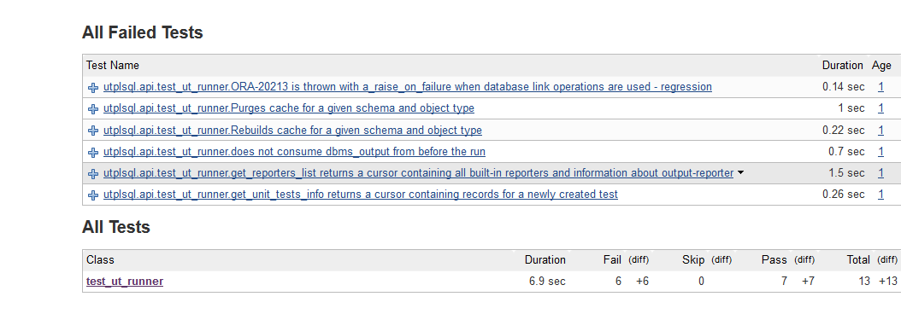
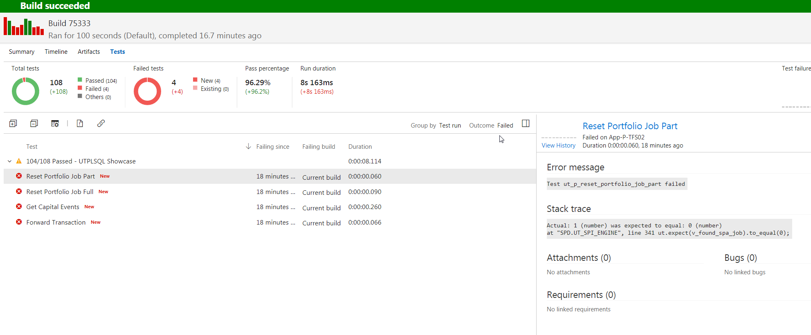

Using reporters

utPLSQL provides the following reporting formats.
Documentation reporter¶
The ut_documentation_reporter is the default reporting format used by the framework.
It provides a human readable test results.
To invoke tests with documentation reporter use one of following calls from sql console (SQLPlus)
exec ut.run();
exec ut.run(ut_documentation_reporter());
Example outputs from documentation reporter.

The documentation report provides the following information.
- Test suite name or test package name (nested with suitepath if suitepath is used)
- Test description name or test procedure name
- Information about test failing (FAILED - n)
- Information about disabled test (IGNORED)
- List of all errors and failures
- Summary with total number of tests, number of tests with status and timing for the execution
Color output from documentation reporter¶
When invoking tests with documentation reporter and your command line supports ANSICONSOLE (default on Unix) available for Windows, you can obtain the coloured outputs from the documentation reporter.
To invoke tests with documentation reporter in color mode use one of following calls.
exec ut.run(a_color_console=>true);
exec ut.run(ut_documentation_reporter(), a_color_console=>true);
Example outputs from documentation reporter.

JUnit reporter¶
Most of continuous integration servers (like Jenkins) are capable of consuming unit test execution results in JUnit format.
The ut_junit_reporter in earlier version referred as ut_xunit_reporter is producing outcomes as JUnit-compatible XML unit test report, that can be used by CI servers to display their custom reports and provide metrics (like tests execution trends).
Please note that in previous versions it was called ut_xunit_reporter and for backward compatibility that name still exists.
Invocation of tests with JUnit reporter.
exec ut.run(ut_junit_reporter());
The ut_junit_reporter doesn't accept any arguments.
Example of junit report integrated with Jenkins CI

Example of failure report details

Teamcity reporter¶
Teamcity is a CI server by Jetbrains. It supports JUnit reporting and additionally has it's own format of reporting that allows tracking of progress of a CI step/task as it executes.
The TeamCity format developed by Jetbrains is supported by utPLSQL with ut_teamcity_reporter.
Invocation of tests with Teamcity reporter.
exec ut.run(ut_teamcity_reporter());
The ut_teamcity_reporter doesn't accept any arguments.
Example of unit test report from Teamcity CI server.

Example of failure report details

Sonar test reporter¶
If you are using SonarQube or SonarCloud to do static code analysis for you PLSQL projects, your code analysis can benefit from code coverage and test results.
utPLSQL provides two reporters to for SonarQube:
- ut_sonar_test_reporter - provides an XML output of each test executed per each project test file (package)
- ut_coverage_sonar_reporter - provides XML output of code coverage per each project source file
ut_sonar_test_reporter needs to be called with a list of paths to test files (packages).
The paths to files can be relative to the project root directory (recommended) or be absolute.
ut_coverage_sonar_reporter needs to be called with a list of paths to source files for your project.
The paths to files can be relative to the project root directory (recommended) or be absolute.
Providing invalid paths or paths to non-existing files will result in failure when publishing test results/coverage results to sonar server.
For details on how to invoke reporter with paths, see the Coverage reporters section.
TFS / VSTS Reporter¶
If you are using TFS or VSTS to do static code analysis for you PLSQL projects and run builds, your code analysis can benefit from code coverage and test results. TFS reporter is designed specifically to work with Microsoft Team Fundation Server report format which is very old version of JUnit.
Main diffrence between standard JUnit is that
utPLSQL provides test reporter to for TFS / VSTS server:
- ut_tfs_junit_reporter - provides an XML output of each test executed per each project test file (package)
Example of test report from TFS CI server.
Summary:

Details:

Coverage reporters¶
utPLSQL comes with a set of build-in coverage reporters. Have a look into the coverage documentation to learn more about them.
Debug reporter¶
The ut_debug_reporter provides a highly verbose output containing thorough details about framework and test execution.
Use this reporter only when you need to investigate framework issues or raise a bug report to utPLSQL team.
Usage of this reporter might have impact on performance of test-suite execution.
Amongst others, reporter provides the following information: - framework version - database version - database OS - database, instance and session NLS settings - timing of each event - time between events logged - time from start of the run - stack trace - information about input parameters for the run including - run paths - source file mappings - test file mappings - coverage schemas - coverage exclusions and inclusions - client character set - information about every step of the run including - every suite and context - every before/after procedure - every test - every expectation and it's result
Some of the information in debug log might be redundant.
Note:
Some of the information in debug log may be sensitive. In particular: - expectation results and messages (logged even for successful runs) - test structure - db object names - etc.
Custom reporters¶
It is possible to add your own reporters by creating an appropriate object type. In principle, it has to be a subtype of ut_reporter_base. However, if the reporter is expected to produce output consumable by a client oustside of the database (e.g. the data has to be reported to the screen or to a file), then you should base it on ut_output_reporter_base (which is a subtype of ut_reporter_base). In contrast, if you would like to create a reporter that, for example, saves the data to a database table, then it should be based directly on ut_reporter_base. (Currently, all reporters in the utPLSQL framework are based on ut_output_reporter_base.) Coverage reporters are based on ut_coverage_reporter_base (a subtype of ut_output_reporter_base).
If you need to produce a colored text output from the custom reporter, then you can build it basing on ut_console_reporter_base (a subtype of ut_output_reporter_base). In many cases it may also be more convenient to create the custom reporter type under a more specialized type, like ut_documentation_reporter or ut_junit_reporter, and override just some of the functionality.
It is recommended to create the reporter type in the schema where utPLSQL is installed (by default it is the UT3 schema). Note that before running the utPLSQL uninstall scripts, all custom reporters should be dropped (cf. the installation documentation). In particular, when upgrading to a newer version of utPLSQL, one has to drop the custom reporters and recreate them after the upgrade.
Note:
It is possible, but cumbersome, to use another schema for storing the custom reporters. This requires to create a synonym for the base reporter type in the schema that is going to own the custom reporter, and to provide appropriate grants both to the owner of the custom reporter and to the user running the reporter. After upgrading or reinstalling utPLSQL, the extra privileges need to be recreated. This approach is not recommended.
Assuming that the custom reporter type is created in the UT3 schema, to run the tests using a custom reporter just call: exec ut.run(ut3.custom_reporter_name());, optionally providing parameter values to the custom_reporter_name constructor.
One may get acquainted with the source code of the standard reporters bundled with utPLSQL (including the coverage reporters) by browsing the source/reporters/ directory. The base reporter types ut_reporter_base, ut_output_reporter_base and ut_console_reporter_base are defined in source/core/types. The base coverage reporter type ut_coverage_reporter_base is in source/core/coverage. There are also two examples of custom reporters in examples/custom_reporters/, both extending the functionality of ut_documentation_reporter:
ut_custom_reporteraccepts an integer parametera_tab_size; it alters the behaviour ofut_documentation_reporterby changing the size of the indentation according to the parameter value (by default the indentation is increased).ut_expectations_reporteraccepts avarchar2parametera_report_all_expectations; if its value is'Y'(which is the default), then the reporter shows the results of all expectations that are run. This stays in contrast withut_documentation_reporter, which shows the results of all tests that are run, but only of the expectations that failed (keep in mind that a single test may consist of several expectations).
Created: February 26, 2017 02:13:22